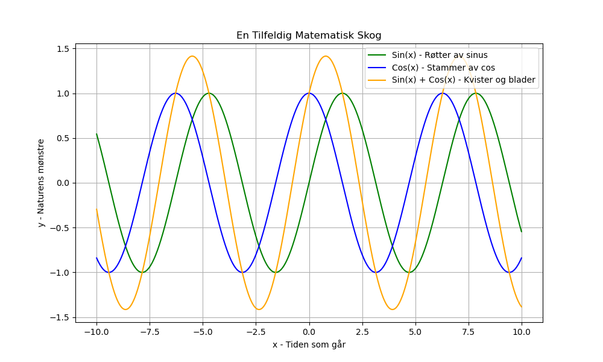

Dagens dikt
I en skog av tall, der kurver bor,
En granskog av plott som aldri forgår.
Med røtter av sinus og stammer av cos,
De svever i luft, helt uten trods.
Kvister av lykke og blader av pi,
Matematikken er som magi.
Vi plotter det sammen, et kunstverk på skjerm,
En verden, litt tilfeldig, hvor alt er vår term.

Kode
import numpy as np
import matplotlib.pyplot as plt
# Parameter for plottet
x = np.linspace(-10, 10, 1000)
# Mathematisk representasjon av diktet
y1 = np.sin(x) # Røtter av sinus, skogbunnen
y2 = np.cos(x) # Stammer av cos, himmelens linjer
y3 = np.sin(x) + np.cos(x) # Kvister og blader i tallskogen
# Plotting
plt.figure(figsize=(10, 6))
plt.plot(x, y1, label="Sin(x) - Røtter av sinus", color='green')
plt.plot(x, y2, label="Cos(x) - Stammer av cos", color='blue')
plt.plot(x, y3, label="Sin(x) + Cos(x) - Kvister og blader", color='orange')
# Legg til dekor
plt.title("En Tilfeldig Matematisk Skog")
plt.xlabel("x - Tiden som går")
plt.ylabel("y - Naturens mønstre")
plt.legend()
plt.grid(True)
# Vis verdenen
plt.savefig('2025-03-20-20-00-32.png')